Films:
Contact Call
‹컨택트 콜›
사운드퍼포먼스, 프로젝터, 360도 회전 설치장치, 4채널 스피커, 2022.
‹Contact Call›
Sounperformance, Projecter, 360 rotataing installation, 4-channel speaker, 2022.
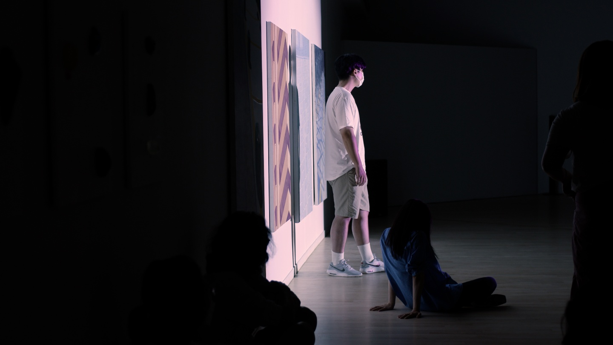

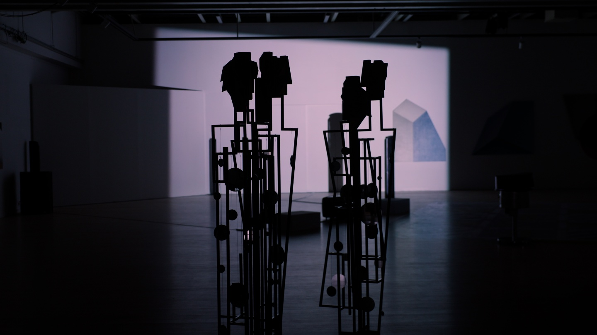
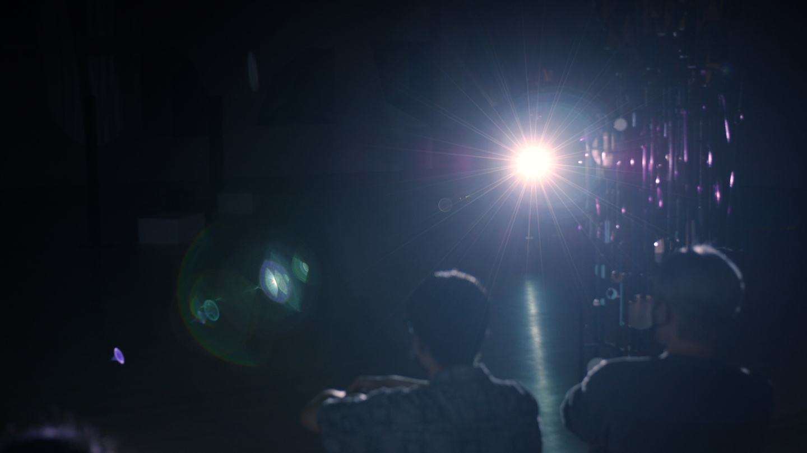
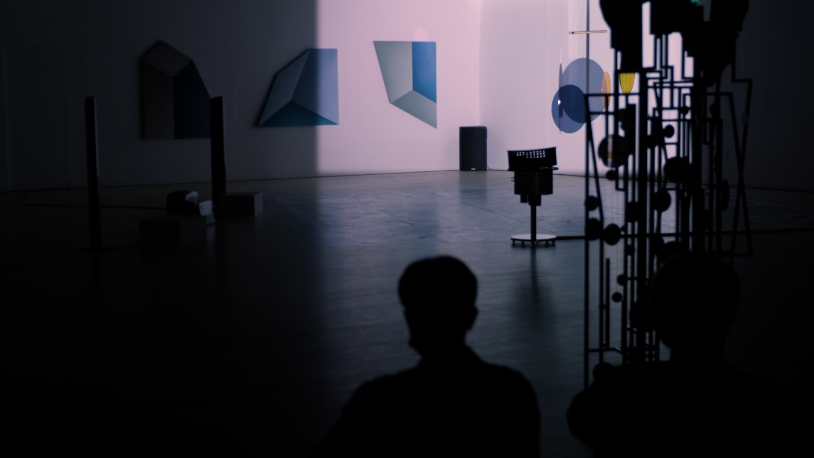
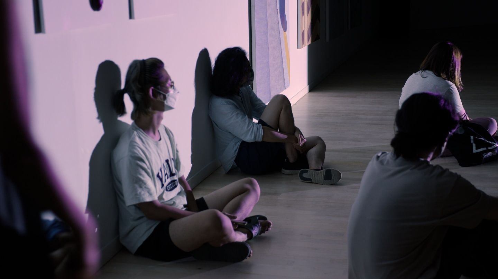
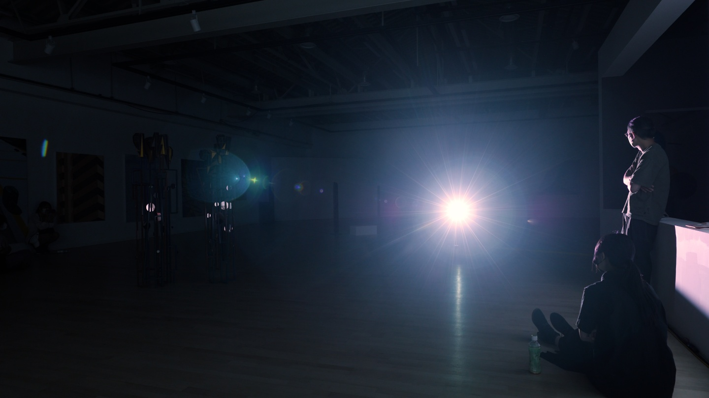
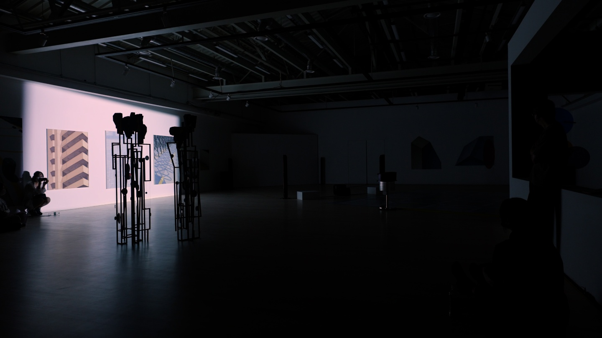
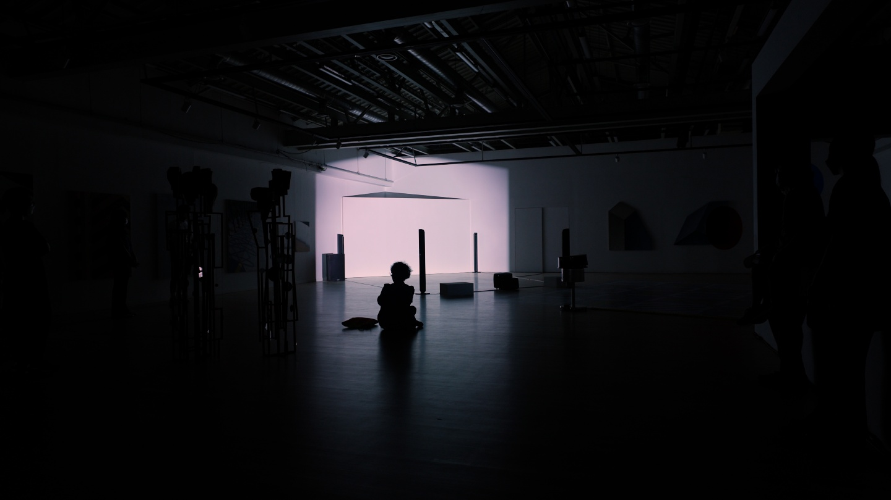
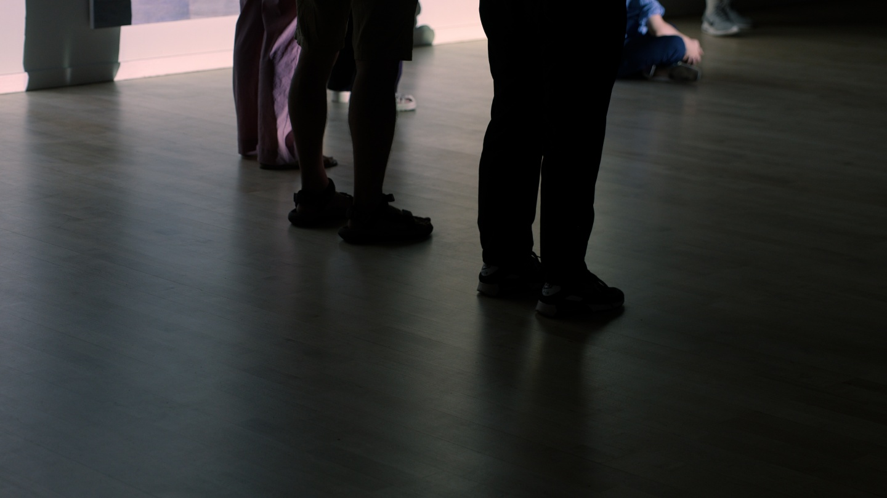
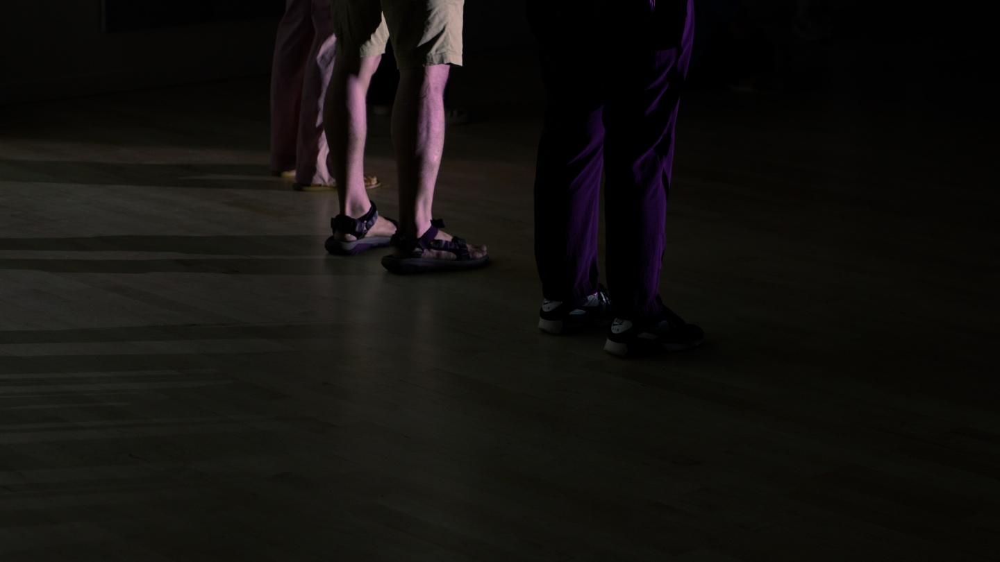
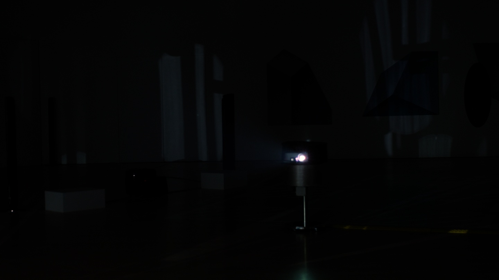
외침들, 비명들, 비상신호들 소리의 질서를 은폐한다
증폭되고 교류되며 몸에 침투하는 바이러스의 언어들
그리고 폭격 이후의 고요
패턴을 들을 때 무자비한 신호는 언어로 복귀하고 자연은 수단이 아닌 형태로 모습을 드러낸다.
ﾠ
자연의 소리에는 일정한 패턴이 있다. 물의 흐름이 부딪쳐 발생하는 소용돌이, 신호를 주고 받는 돌고래, 개구리의 호흡에 따른 반복적인 소리들, 소리의 부딪침은 증폭되고 교류되며 몸에 침투하고 영향을 끼치며 그것은 삶의 보이지 않는 네트워크 속에서 공유된다. 본 프로젝트는 자연과 문화를 연결하는 네트워크로서 인간의 언어가 아닌 다른 소리들의 기호를 통해 배경적 존재 즉 미디어로서 환경을 가시화하고자 한다. 그것은 생물들의 소리를 비롯해, 바람, 물 유기체부터 인터넷 인프라망, 화폐의 흐름에 이르기까지 포괄한다. 미디어의 어원은 '중간','사이'에서 출발한다. 중간의 경계에서 무질서한 소리의 패턴화를 통해 본 프로젝트는 생명의 기호를 해석하는 일을 언어와 상징이 아닌 그 이전의 차원에서 사운드와 빛의 운동과 형상성의 하강을 통해 다뤄보기 위해 자연에서 추출한 소리에서 패턴을 발견한 뒤 반복 변형되는 과정에서 비트의 최소단위부터 최대치의 단위까지 증폭과 축소를 통해 추상화되는 과정 속에서 도심의 문명과 분리된 자연의 소리가 아닌, 어떻게 보이지 않는 네트워크망을 통해 인간의 삶, 나아가 미래의 시간과 공존하고 영향을 끼치는지 사운드퍼포먼스로 구현해보고자 한다.
Shouts, screams, emergency signals conceal the order of sound
The language of viruses that amplify, exchange, and penetrate the body
And the silence after the bombing
When we hear the pattern, the merciless signal returns to language, and nature reveals itself as a form, not a means.
There is a certain pattern in the sounds of nature. The whirlpools that occur when the flow of water collides, the repeated sounds of dolphins exchanging signals, and the breathing of frogs, the collision of sounds amplify, exchange, penetrate the body, and affect it, and it is shared in the invisible network of life. This project, as a network that connects nature and culture, seeks to visualize the environment as a background existence, that is, as media, through signs of sounds other than human language. It includes everything from the sounds of living things, wind, water organisms, to the Internet infrastructure and the flow of money. The etymology of media begins with 'middle' and 'between'. Through the patterning of disordered sounds at the borderline of the middle, this project attempts to interpret the signs of life through the movement and descent of form in sound and light in a dimension prior to language and symbols, rather than through language and symbols. After discovering patterns in sounds extracted from nature, the project abstracts through amplification and reduction from the minimum to maximum units of bits in a process of repeated transformation, and attempts to implement, as a sound performance, how the sounds of nature, not separated from urban civilization, coexist with and influence human life and even future time through an invisible network.